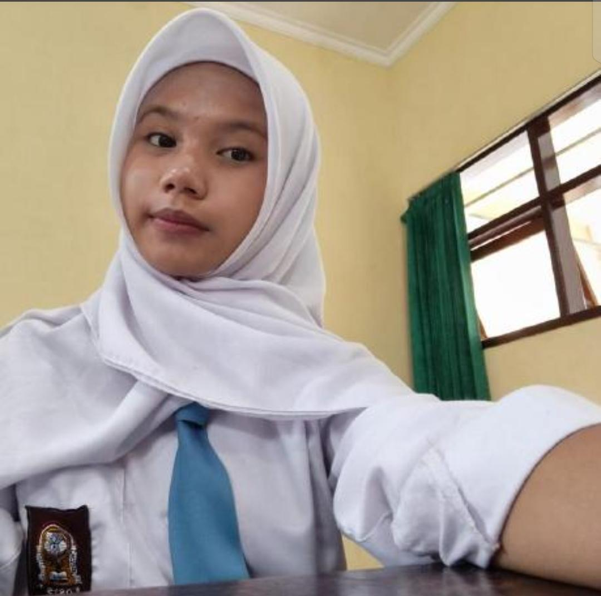

Pilih menu di bawah

Rosallia Dwi Rahmawanti/ Developer
Portal Link Pelaksanaan Tugas & Biodata
TEXT HALAMAN INDEX
© 2026 Microsite Profile. All rights reserved.

Portal Link Pelaksanaan Tugas & Biodata
© 2026 Microsite Profile. All rights reserved.